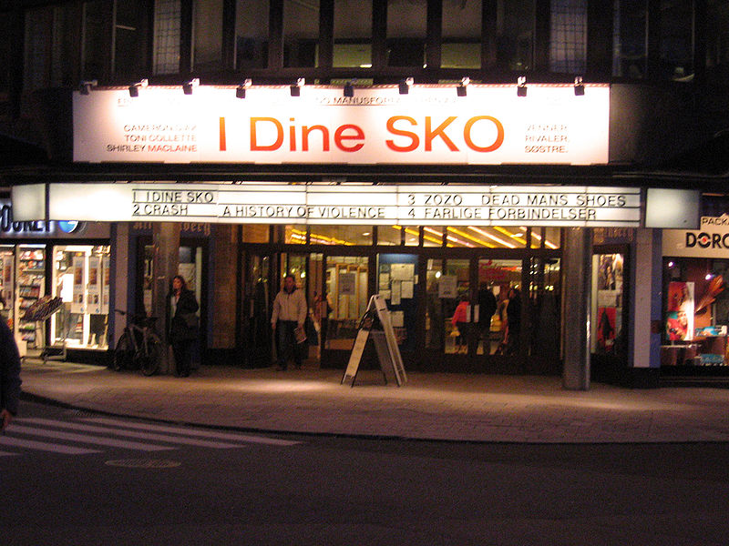

Colosseum Kino

Colosseum er tegnet av arkitektene Jacob Hanssen og Gerhard Iversen og sto ferdig i 1928.
Adresse: Fridtjof Nansens vei 6, 0369 Oslo. Colosseum kino er Oslo Kinos største kino. Kinoen ligger på Majorstuen i Oslo og har fire saler i ulike størrelser hvorav den største, Colosseums sal 1, har 978 sitteplasser. Colosseums sal 1 har siden den ble sertifisert i 1998 vært verdens største THX-sertifiserte kinosal. Colosseum 1 har et lerret på 10×22 meter, og salen har siden juli 2009 kunnet vise digital 3D ved bruk av RealD.
lukk
Saga Kino
I 1981 ble Saga ombygget til kinosenter med 6 saler.
Adresse: Stortingsgata 28, Oslo. Oslo Kino er Norges største kinovirksomhet og driver syv kinoer i Oslo: Colosseum, Gimle, Klingenberg, Ringen, Saga, Symra og Victoria (som tidligere het Vika). Kinoen ble åpnet 15. februar 1934. Den var tegnet av arkitektene Gudolf Blakstad og Herman Munthe-Kaas. Den hadde da én sal med parkett, galleri og losjer med til sammen 1345 plasser.
lukk
Klingenberg Kino

I 1995 ble inngangspartiet, publikumsarealene og hovedsalen fredet av Riksantikvaren.
Adresse: Olav Vs gate 4, 0161 Oslo. Klingenberg kino er en kino i Vika i Oslo sentrum, ikke langt fra Nationaltheatret. Klingenberg kino ble bygget på tomten til Cirkus Verdensteater som ble revet i 1935. Kinoen åpnet 6. oktober 1938. Klingenberg har gjennomgått en rekke ombygginger, der seteantallet stadig har blitt redusert for å øke komforten og avstanden mellom seteradene.
lukk